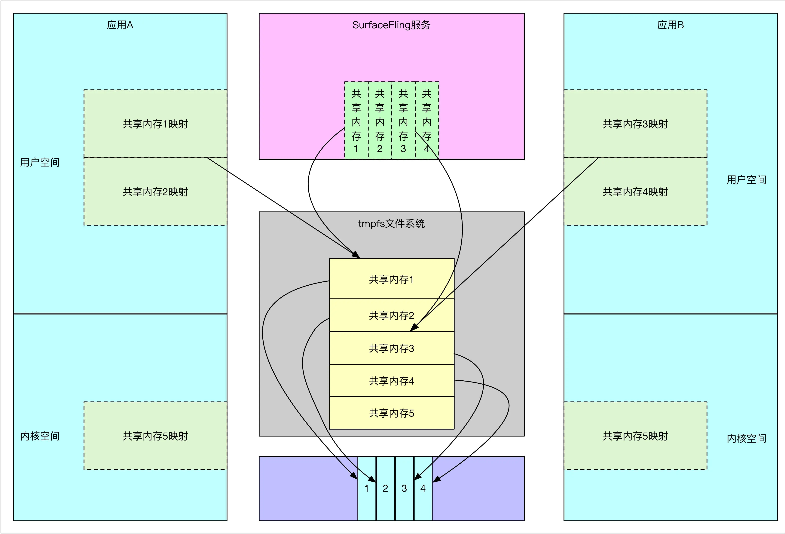
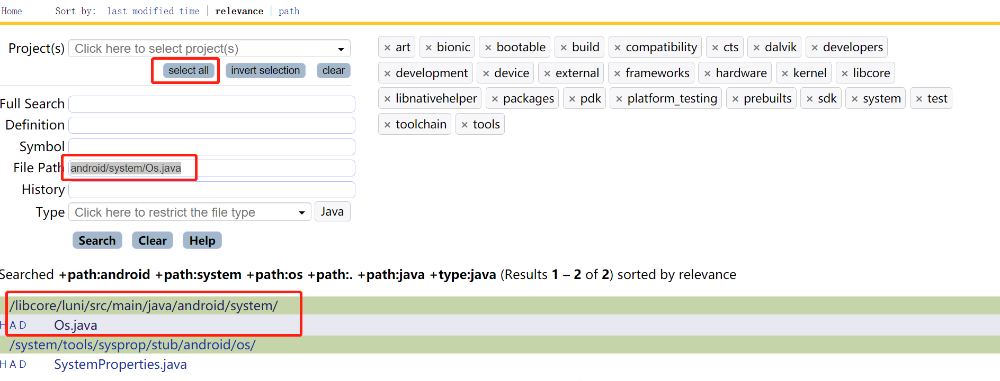
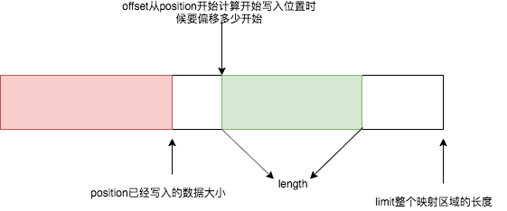
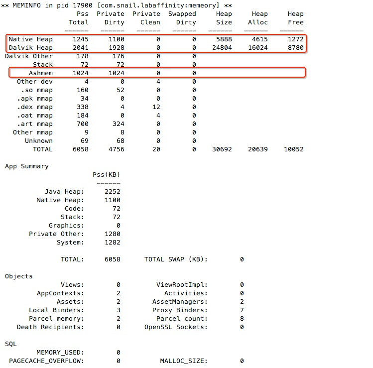

Ashmem简介（Android IPC传输大数据）¶
Ashmem为什么会诞生？作用是什么？在聊这个问题之前我们先来了解Android的IPC都用那些，还有就是网上传得很火的binder限制1M是怎么回事，如何解决限制1M的问题？
IPC 方式¶
Activity¶
Intent callIntent = new Intent(Intent.ACTION_CALL, Uri.parse("tel:021-1234567" );
mContext.startActivity(callIntent);
Content Provider¶
Android应用程序可以使用文件或SqlLite数据库来存储数据。 Content Provider提供了一种在多个应用程序之间数据共享的方式（跨进程共享数据），应用程序可以利用Content Provider完成下面的工作：
- 查询数据
- 修改数据
- 添加数据
- 删除数据
Broadcast¶
Intent intent = new Intent("com.android.ACTION_TEST");
intent.putExtra("value","content");
mContext.sendBroadcast(intent);
LocalSocket¶
客户端¶
客户端LocalSocket代码
//创建对象
LocalSocket localSocket = new LocalSocket();
//连接socketServerSocket
localSocket.connect(new LocalSocketAddress(String addrStr));
获取localSocket的输入输出流：
outputStream = localSocket.getOutputStream();
inputStream = localSocket.getInputStream();
写入数据：
outputStream.write("数据".getBytes());
循环接收数据：
try {
int readed = inputStream.read();
int size = 0;
byte[] bytes = new byte[0];
while (readed != -1) {
byte[] copy = new byte[500000];
System.arraycopy(bytes, 0, copy, 0, bytes.length);
bytes = copy;
bytes[size++] = (byte) readed;
//以换行符标识成结束
if ('\n' == (byte) readed) {
String resultStr = new String(bytes, 0, size);
break;
}
readed = inputStream.read();
}
} catch (IOException e) {
return false;
}
服务端¶
服务端LocalServerSocket代码
//初始化
try {
//socketAddress需跟localSocket地址一致，否则无法连接上
serverSocket = new LocalServerSocket(socketAddress);
} catch (IOException e) {
LoggerHelper.e("Server to establish connection exception:" + e.toString());
e.printStackTrace();
return false;
}
try {
//获取接收的LocalSocket
localSocket = serverSocket.accept();
//设置缓冲大小
localSocket.setReceiveBufferSize(ConstantConfig.BUFFER_SIZE);
localSocket.setSendBufferSize(ConstantConfig.BUFFER_SIZE);
} catch (IOException e) {
e.printStackTrace();
LoggerHelper.d("Waiting to be linked to a bug,error:" + e.toString());
return false;
}
获取输入输出流一致：
if (localSocket != null) {
try {
inputStream = localSocket.getInputStream();
outputStream = localSocket.getOutputStream();
/** 允许一直接收数据，一直到连接被断开，则认为应用端退出，自己也退出 */
while (isLock && receiveData()) ;
} catch (IOException e) {
LoggerHelper.e("Get stream exception:" + e.toString()); e.printStackTrace();
return false;
}
}
AIDL Service¶
aidl的基本用法请自行百度
小结¶
除了scocket的通信方式，其他的通信方式都是基于binder机制，所以肯定也受binder的一些限制，那么binder限制1M是从哪里看出来的呢?
Binder限制¶
我们先来看看Binder初始化时候的代码：
http://aospxref.com/android-11.0.0_r21/xref/frameworks/native/libs/binder/ProcessState.cpp
#define BINDER_VM_SIZE ((1 * 1024 * 1024) - sysconf(_SC_PAGE_SIZE) * 2)
ProcessState::ProcessState(const char *driver)
: mDriverName(String8(driver))
, mDriverFD(open_driver(driver))
, mVMStart(MAP_FAILED)
, mThreadCountLock(PTHREAD_MUTEX_INITIALIZER)
, mThreadCountDecrement(PTHREAD_COND_INITIALIZER)
, mExecutingThreadsCount(0)
, mMaxThreads(DEFAULT_MAX_BINDER_THREADS)
, mStarvationStartTimeMs(0)
, mBinderContextCheckFunc(nullptr)
, mBinderContextUserData(nullptr)
, mThreadPoolStarted(false)
, mThreadPoolSeq(1)
, mCallRestriction(CallRestriction::NONE)
{
...
if (mDriverFD >= 0) {
// mmap the binder, providing a chunk of virtual address space to receive transactions.
mVMStart = mmap(nullptr, BINDER_VM_SIZE, PROT_READ, MAP_PRIVATE | MAP_NORESERVE, mDriverFD, 0);
...
}
...
}
能看到应用在初始化Binder的时候，已经限制了大小为1M-2页(1页=4k)的大小也就是1016k大小，所以网上说的限制1M其实不对，应该是1016K。
如果只是传输命令的话还可以，但是要传输图像数据这个大小根本不够。加上Binder内部有对每一个Binder内核缓冲区有自己的调度算法，没办法满足以最快的速度传输到SF进程中。也因此，Android选择使用共享内存的方式传递数据，也就是Ashmem匿名内存。
到这来其实我们还是不知道Ashmem到底是什么，了解Linux的同学应该都知道linux共享内存，那么我们先来了解一下Linux共享内存。
Linux共享内存¶
首先看一下两个关键函数，
- int shmget(key_t key, size_t size, int shmflg); 该函数用来创建共享内存
- void *shmat(int shm_id, const void *shm_addr, int shmflg); 要想访问共享内存，必须将其映射到当前进程的地址空间
其中key_t是共享内存的唯一标识，可以说，Linux的共享内存其实是**有名**共享内存，而名字就是key，具体用法如下
读取进程¶
int main()
{
void *shm = NULL;//分配的共享内存的原始首地址
struct shared_use_st *shared;//指向shm
int shmid;//共享内存标识符
//创建共享内存
shmid = shmget((key_t)12345, sizeof(struct shared_use_st), 0666|IPC_CREAT);
//将共享内存映射到当前进程的地址空间
shm = shmat(shmid, 0, 0);
//设置共享内存
shared = (struct shared_use_st*)shm;
shared->written = 0;
//访问共享内存
while(1) {
if(shared->written != 0) {
printf("You wrote: %s", shared->text);
if(strncmp(shared->text, "end", 3) == 0)
break;
}}
//把共享内存从当前进程中分离
if(shmdt(shm) == -1) { }
//删除共享内存
if(shmctl(shmid, IPC_RMID, 0) == -1) { }
exit(EXIT_SUCCESS);
}
写进程¶
int main()
{
void *shm = NULL;
struct shared_use_st *shared = NULL;
char buffer[BUFSIZ + 1];//用于保存输入的文本
int shmid;
//创建共享内存
shmid = shmget((key_t) 12345, sizeof(struct shared_use_st), 0666|IPC_CREAT);
//将共享内存连接到当前进程的地址空间
shm = shmat(shmid, (void*)0, 0);
printf("Memory attached at %X\n", (int)shm);
//设置共享内存
shared = (struct shared_use_st*)shm;
while(1)//向共享内存中写数据
{
//数据还没有被读取，则等待数据被读取,不能向共享内存中写入文本
while(shared->written == 1)
{
sleep(1);
}
//向共享内存中写入数据
fgets(buffer, BUFSIZ, stdin);
strncpy(shared->text, buffer, TEXT_SZ);
shared->written = 1;
if(strncmp(buffer, "end", 3) == 0)
running = 0;
}
//把共享内存从当前进程中分离
if(shmdt(shm) == -1) { }
sleep(2);
exit(EXIT_SUCCESS);
}
可以看到，Linux共享内存通信效率非常高，进程间不需要传递数据，便可以直接访问，缺点也很明显，Linux共享内存没有提供同步的机制，在使用时，要借助其他的手段来处理进程间同步。
思考¶
在Android系统中，APP端View视图的数据是如何传递SurfaceFlinger服务的呢？View绘制的数据最终是按照一帧一帧显示到屏幕的，而每一帧都会占用一定的存储空间，在APP端执行draw的时候，数据很明显是要绘制到APP的进程空间，但是视图窗口要经过SurfaceFlinger图层混排才会生成最终的帧，而SurfaceFlinger又运行在另一个独立的服务进程，那么View视图的数据是如何在两个进程间传递的呢，普通的Binder通信肯定不行，因为Binder不太适合这种数据量较大的通信，那么View数据的通信采用的是什么IPC手段呢？
答案就是共享内存，更精确的说是匿名共享内存。也就是我们之前一直提到的Ashmem。
Android直接在Linux共享内存机制上做出改进，进而形成了Android的匿名共享内存（Anonymous Shared Memory-Ashmem）。
通过Ashmem，APP进程同SurfaceFlinger共用一块内存，如此，就不需要进行数据拷贝，APP端绘制完毕，通知SurfaceFlinger端合成，再输出到硬件进行显示即可。
 （图片来源于网络）
使用¶
其实Ashmem不仅仅只是内核中能够使用，其实在Java层Android也提供了一个名为MemoryFile的类提供方便使用匿名共享内存，本次就以MemoryFile为切口，来聊聊Ashmem匿名内存的使用。
/**
* IMemoryAidlInterface.aidl
*/
package com.i-rtfsc.ipcbigdata;
import android.os.ParcelFileDescriptor;
interface IMemoryAidlInterface {
ParcelFileDescriptor getParcelFileDescriptor();
}
/**
* MemoryFetchService.java
*/
public class MemoryFetchService extends Service {
@Nullable
@Override
public IBinder onBind(Intent intent) {
return new MemoryFetchStub();
}
static class MemoryFetchStub extends IMemoryAidlInterface.Stub {
@Override
public ParcelFileDescriptor getParcelFileDescriptor() throws RemoteException {
MemoryFile memoryFile = null;
try {
memoryFile = new MemoryFile("test_memory", 1024);
memoryFile.getOutputStream().write(new byte[]{1, 2, 3, 4, 5});
Method method = MemoryFile.class.getDeclaredMethod("getFileDescriptor");
FileDescriptor des = (FileDescriptor) method.invoke(memoryFile);
return ParcelFileDescriptor.dup(des);
} catch (Exception e) {}
return null;
}}}
}
/**
* TestActivity.java
*/
Intent intent = new Intent(MainActivity.this, MemoryFetchService.class);
bindService(intent, new ServiceConnection() {
@Override
public void onServiceConnected(ComponentName name, IBinder service) {
byte[] content = new byte[10];
IMemoryAidlInterface iMemoryAidlInterface
= IMemoryAidlInterface.Stub.asInterface(service);
try {
ParcelFileDescriptor parcelFileDescriptor = iMemoryAidlInterface.getParcelFileDescriptor();
FileDescriptor descriptor = parcelFileDescriptor.getFileDescriptor();
FileInputStream fileInputStream = new FileInputStream(descriptor);
fileInputStream.read(content);
} catch (Exception e) {
}}
@Override
public void onServiceDisconnected(ComponentName name) {
}
}, Service.BIND_AUTO_CREATE);
封装好的或者更详细的代码可以参考：https://github.com/CCLCM/AndroidSharedMemoryDemo
本文的重心在于分析原理，而不是使用方法。
能看到操作和普通的File操作一模一样，好像根本没有什么区别。File本身也可以作为数据中转站做传递信息。那么MemoryFile比起普通的File优势强在哪里呢？接下来，让我们剖析一下源码，来比较看看匿名内存和File相比有什么区别，和Binder驱动又有什么区别。
MemoryFile¶
MemoryFile是android在最开始就引入的一套框架，其内部实际上是封装了android特有的内存共享机制Ashmem匿名共享内存，简单来说Ashmem在Android内核中是被注册成一个特殊的字符设备，Ashmem驱动通过在内核的一个自定义slab缓冲区中初始化一段内存区域，然后通过mmap把申请的内存映射到用户的进程空间中（通过tmpfs），就可以在用户进程中使用这里申请的内存了，另外Ashmem的一个特性就是可以在系统内存不足的时候，回收掉被标记为"unpin"的内存(可自行查看网上资料)，MemoryFile也可以通过Binder跨进程调用来让两个进程共享一段内存区域。由于整个申请内存的过程并不再Java层上，可以很明显的看出使用MemoryFile申请的内存实际上是并不会占用Java堆内存的。
MemoryFile创建¶
http://aospxref.com/android-11.0.0_r21/xref/frameworks/base/core/java/android/os/MemoryFile.java
/**
* Allocates a new ashmem region. The region is initially not purgable.
*
* @param name optional name for the file (can be null).
* @param length of the memory file in bytes, must be positive.
* @throws IOException if the memory file could not be created.
*/
public MemoryFile(String name, int length) throws IOException {
try {
mSharedMemory = SharedMemory.create(name, length);
mMapping = mSharedMemory.mapReadWrite();
} catch (ErrnoException ex) {
ex.rethrowAsIOException();
}
}
SharedMemory.create¶
http://aospxref.com/android-11.0.0_r21/xref/frameworks/base/core/java/android/os/SharedMemory.java
public static @NonNull SharedMemory create(@Nullable String name, int size)
throws ErrnoException {
...
return new SharedMemory(nCreate(name, size));
}
private SharedMemory(FileDescriptor fd) {
...
mFileDescriptor = fd;
mSize = nGetSize(mFileDescriptor);
...
mMemoryRegistration = new MemoryRegistration(mSize);
mCleaner = Cleaner.create(mFileDescriptor,
new Closer(mFileDescriptor, mMemoryRegistration));
}
SharedMemory构造函数做了以下这么几件事：
- 通过nCreate在native下创建一个文件描述符，并且关联到到SharedMemory
- 通过nGetSize获取当前共享内存大小
- 通过MemoryRegistration把当前大小注册到Java 虚拟机中的native堆栈大小中
- 初始化Cleaner等到合适的时候通过gc联动Cleaner销毁native下的对象。
http://aospxref.com/android-11.0.0_r21/xref/frameworks/base/core/java/android/os/SharedMemory.java#354
/**
* Helper class that ensures that the native allocation pressure against the VM heap stays
* active until the FD is closed as well as all mappings from that FD are closed.
*/
private static final class MemoryRegistration {
private int mSize;
private int mReferenceCount;
private MemoryRegistration(int size) {
mSize = size;
mReferenceCount = 1;
VMRuntime.getRuntime().registerNativeAllocation(mSize);
}
public synchronized MemoryRegistration acquire() {
mReferenceCount++;
return this;
}
public synchronized void release() {
mReferenceCount--;
if (mReferenceCount == 0) {
VMRuntime.getRuntime().registerNativeFree(mSize);
}
}
}
MemoryRegistration 本质上就是注册了Java虚拟机中native堆的大小，每一次一个引用都有一次计数，只有减到0才销毁，毕竟这是共享内存，不应该完全由Java虚拟机的GC机制决定。 还记得前面我们提到SharedMemory首先通过nCreate在native下创建一个文件描述符。下面我们就来分析native代码都干些什么。
nCreate(name, size)¶
http://aospxref.com/android-11.0.0_r21/xref/frameworks/base/core/java/android/os/SharedMemory.java#377
private static native FileDescriptor nCreate(String name, int size) throws ErrnoException;
http://aospxref.com/android-11.0.0_r21/xref/frameworks/base/core/jni/android_os_SharedMemory.cpp#53
jobject SharedMemory_nCreate(JNIEnv* env, jobject, jstring jname, jint size) {
// Name is optional so we can't use ScopedUtfChars for this as it throws NPE on null
const char* name = jname ? env->GetStringUTFChars(jname, nullptr) : nullptr;
int fd = ashmem_create_region(name, size);
// Capture the error, if there is one, before calling ReleaseStringUTFChars
int err = fd < 0 ? errno : 0;
if (name) {
env->ReleaseStringUTFChars(jname, name);
}
if (fd < 0) {
throwErrnoException(env, "SharedMemory_create", err);
return nullptr;
}
return jniCreateFileDescriptor(env, fd);
}
通过ashmem_create_region，创建一个共享内存的区域。还记得Linux中那句话，一切皆为文件，实际上匿名共享内存创建出来也是一个文件，不过因为是在tmpfs临时文件系统才叫做匿名的。
ashmem_create_region¶
http://aospxref.com/android-11.0.0_r21/xref/system/core/libcutils/ashmem-dev.cpp#357
int ashmem_create_region(const char *name, size_t size)
{
int ret, save_errno;
if (has_memfd_support()) {//属性sys.use_memfd是否为true
return memfd_create_region(name ? name : "none", size);
}
int fd = __ashmem_open();
if (fd < 0) {
return fd;
}
if (name) {
char buf[ASHMEM_NAME_LEN] = {0};
strlcpy(buf, name, sizeof(buf));
ret = TEMP_FAILURE_RETRY(ioctl(fd, ASHMEM_SET_NAME, buf));
...
}
ret = TEMP_FAILURE_RETRY(ioctl(fd, ASHMEM_SET_SIZE, size));
...
return fd;
...
}
创建匿名共享内存分为三个步骤:
- __ashmem_open 创建匿名共享内存
- 通过ioctl 给匿名共享内存命名，只有命名了才能通过命名找到对应的匿名共享内存
- ioctl通过ASHMEM_SET_SIZE命令设置匿名共享内存的大小
__ashmem_open¶
http://aospxref.com/android-11.0.0_r21/xref/system/core/libcutils/ashmem-dev.cpp
static int __ashmem_open()
{
int fd;
pthread_mutex_lock(&__ashmem_lock);
fd = __ashmem_open_locked();
pthread_mutex_unlock(&__ashmem_lock);
return fd;
}
/* logistics of getting file descriptor for ashmem */
static int __ashmem_open_locked()
{
static const std::string ashmem_device_path = get_ashmem_device_path();
if (ashmem_device_path.empty()) {
return -1;
}
int fd = TEMP_FAILURE_RETRY(open(ashmem_device_path.c_str(), O_RDWR | O_CLOEXEC));
// fallback for APEX w/ use_vendor on Q, which would have still used /dev/ashmem
if (fd < 0) {
fd = TEMP_FAILURE_RETRY(open("/dev/ashmem", O_RDWR | O_CLOEXEC));
}
if (fd < 0) {
return fd;
}
struct stat st;
int ret = TEMP_FAILURE_RETRY(fstat(fd, &st));
if (ret < 0) {
int save_errno = errno;
close(fd);
errno = save_errno;
return ret;
}
if (!S_ISCHR(st.st_mode) || !st.st_rdev) {
close(fd);
errno = ENOTTY;
return -1;
}
__ashmem_rdev = st.st_rdev;
return fd;
}
终于看到了，类似于Binder驱动的打开方式一样，通过/dev/ashmem的方式访问ashmem驱动的file_operation的open方法，最后获得对应的文件描述符fd。 驱动相关的内容我们放到最后一节来分析。
SharedMemory.mapReadWrite¶
ShareMemory当创建好ashmem匿名共享内存之后，将会调用mapReadWrite。
http://aospxref.com/android-11.0.0_r21/xref/frameworks/base/core/java/android/os/SharedMemory.java
public @NonNull ByteBuffer mapReadWrite() throws ErrnoException {
return map(OsConstants.PROT_READ | OsConstants.PROT_WRITE, 0, mSize);
}
public @NonNull ByteBuffer map(int prot, int offset, int length) throws ErrnoException {
checkOpen();
validateProt(prot);
...
long address = Os.mmap(0, length, prot, OsConstants.MAP_SHARED, mFileDescriptor, offset);
boolean readOnly = (prot & OsConstants.PROT_WRITE) == 0;
Runnable unmapper = new Unmapper(address, length, mMemoryRegistration.acquire());
return new DirectByteBuffer(length, address, mFileDescriptor, unmapper, readOnly);
}
- map调用 Os.mmap。其实这个方法的本质就是调用系统调用mmap。这里面的意思就是调用Ashmem对应的文件描述符mmap方法，也就是下午在讲驱动的时候提到的ashmem_mmap。通过这种常规的mmap，让用户态的虚拟内存直接和物理内存映射起来，就能通过0次拷贝的方式映射起来。
- 直接映射一段逻辑上的虚拟内存和文件file关联起来。当系统正式访问这一段虚拟内存，如果找不到就会触发缺页中断(或者尝试的从磁盘执行物理页的换入换出)，此时就会把这一段逻辑绑定的虚拟内存和file正式映射到物理内存。
Os.mmap¶
这个Os.mmap就比较有意思了，特别是对于没怎么接触过Android源码的同学看到这个，就很难找到原函数在哪个地方。那么这一小节我们就简单聊一聊看到一个陌生的方法，如何找到其原函数的。
- 找到这个类的位置

-
因为我们不知道是在哪里，所以选择了所有文件夹都搜索。但是熟悉Android源码的同学都知道，基本上常用到的java代码都是在framework、system、libcore等目录下。
-
File Path输入：Os.java。搜索出来有非常多并且是一些“乱七八糟”的类。那我们换一个思路，既然是File Path那我们把包名也加上好了。如android/system/Os.java。好的，现在搜索结果只有两个，那么这个结果显然就是/libcore/luni/src/main/java/android/system/Os.java。这个也跟我们之前猜测的目录相符合。
-
找到类里实现的方法
http://aospxref.com/android-11.0.0_r21/xref/libcore/luni/src/main/java/android/system/Os.java#392 /** * See <a href="http://man7.org/linux/man-pages/man2/mmap.2.html">mmap(2)</a>. */ public static long mmap(long address, long byteCount, int prot, int flags, FileDescriptor fd, long offset) throws ErrnoException { return Libcore.os.mmap(address, byteCount, prot, flags, fd, offset); }
好家伙，这里又调 Libcore.os.mmap。那么现在我们就不停的重复上面两个步骤。
- Libcore
http://aospxref.com/android-11.0.0_r21/xref/libcore/luni/src/main/java/libcore/io/Libcore.java
public static final Os rawOs = new Linux();
public static volatile Os os = new BlockGuardOs(rawOs);
- BlockGuardOs
http://aospxref.com/android-11.0.0_r21/xref/libcore/luni/src/main/java/libcore/io/BlockGuardOs.java#49
public class BlockGuardOs extends ForwardingOs {
@UnsupportedAppUsage
public BlockGuardOs(Os os) {
super(os);
}
}
- ForwardingOs
public class ForwardingOs implements Os {
@UnsupportedAppUsage
private final Os os;
@UnsupportedAppUsage
@libcore.api.CorePlatformApi
protected ForwardingOs(Os os) {
this.os = Objects.requireNonNull(os);
}
public long mmap(long address, long byteCount, int prot, int flags, FileDescriptor fd, long offset) throws ErrnoException { return os.mmap(address, byteCount, prot, flags, fd, offset); }
}
- Os
http://aospxref.com/android-11.0.0_r21/xref/libcore/luni/src/main/java/libcore/io/Os.java#132
@UnsupportedAppUsage
public long mmap(long address, long byteCount, int prot, int flags, FileDescriptor fd, long offset) throws ErrnoException;
看到这发现我们走远了，其实真正调用的是Libcore中的Linux。
- Linux
http://aospxref.com/android-11.0.0_r21/xref/libcore/luni/src/main/java/libcore/io/Linux.java#129
public native long mmap(long address, long byteCount, int prot, int flags, FileDescriptor fd, long offset) throws ErrnoException;
好，发现调用native。不要慌，其实写过JNI的同学都知道，全局搜索一下看JNINativeMethod里java的mmap方法对应cpp的哪个方法就好了。
当然如果现在直接在源码下这么搜索，出来的结果可想而知，我们换一种更简单的方式。
查找native方法¶
- 找到文件
Linux.java的包是libcore.io，那么我们写成libcore_io_Linux.c或者libcore_io_Linux.cpp在搜索，发现是可以搜到libcore_io_Linux.cpp的。并且也是libcore目录下，那看到是它没错了。
- 找到方法名
http://aospxref.com/android-11.0.0_r21/xref/libcore/luni/src/main/native/libcore_io_Linux.cpp
static JNINativeMethod gMethods[] = {
NATIVE_METHOD(Linux, mmap, "(JJIILjava/io/FileDescriptor;J)J"),
}
jniRegisterNativeMethods(env, "libcore/io/Linux", gMethods, NELEM(gMethods));
看到了
http://aospxref.com/android-11.0.0_r21/xref/libcore/luni/src/main/native/libcore_io_Linux.cpp
static jlong Linux_mmap(JNIEnv* env, jobject, jlong address, jlong byteCount, jint prot, jint flags, jobject javaFd, jlong offset) {
int fd = jniGetFDFromFileDescriptor(env, javaFd);
void* suggestedPtr = reinterpret_cast<void*>(static_cast<uintptr_t>(address));
void* ptr = mmap64(suggestedPtr, byteCount, prot, flags, fd, offset);
if (ptr == MAP_FAILED) {
throwErrnoException(env, "mmap");
}
return static_cast<jlong>(reinterpret_cast<uintptr_t>(ptr));
}
到这里我们就可以明确Os.mmap最终就是调用系统调用mmap。 那么我们现在也知道了如何通过OpenGrok搜索我们不熟悉的java类、java函数、native方法等等。
Unmapper¶
http://aospxref.com/android-11.0.0_r21/xref/frameworks/base/core/java/android/os/SharedMemory.java
private static final class Unmapper implements Runnable {
private long mAddress;
private int mSize;
private MemoryRegistration mMemoryReference;
private Unmapper(long address, int size, MemoryRegistration memoryReference) {
mAddress = address;
mSize = size;
mMemoryReference = memoryReference;
}
@Override
public void run() {
try {
Os.munmap(mAddress, mSize);
} catch (ErrnoException e) { /* swallow exception */ }
mMemoryReference.release();
mMemoryReference = null;
}
}
在DirectByteBuffer设置解开映射的回调Unmapper，如果通过mMemoryRegistration察觉到引用计数为0，就会调用munmap解映射。因此我们可以推敲出，MemoryFile将会以mapReadWrite产生出来的mMapping为基准，不断的从这一段虚拟内存读写。接下来让我们来看看MemoryFile的读写方法。
MemoryFile写数据¶
http://aospxref.com/android-11.0.0_r21/xref/frameworks/base/core/java/android/os/MemoryFile.java
private class MemoryOutputStream extends OutputStream {
private int mOffset = 0;
private byte[] mSingleByte;
@Override
public void write(byte buffer[], int offset, int count) throws IOException {
writeBytes(buffer, offset, mOffset, count);
mOffset += count;
}
@Override
public void write(int oneByte) throws IOException {
if (mSingleByte == null) {
mSingleByte = new byte[1];
}
mSingleByte[0] = (byte)oneByte;
write(mSingleByte, 0, 1);
}
}
写入操作能看到就是获取MemoryFile的OutputStream对象进行操作。能看到在write方法中，本质上还是调用writeBytes作为核心写入方法。
writeBytes¶
http://aospxref.com/android-11.0.0_r21/xref/frameworks/base/core/java/android/os/MemoryFile.java
public void writeBytes(byte[] buffer, int srcOffset, int destOffset, int count)
throws IOException {
beginAccess();
try {
mMapping.position(destOffset);
mMapping.put(buffer, srcOffset, count);
} finally {
endAccess();
}
}
private void beginAccess() throws IOException {
checkActive();
if (mAllowPurging) {
if (native_pin(mSharedMemory.getFileDescriptor(), true)) {
throw new IOException("MemoryFile has been purged");
}
}
}
- native_pin
调用native_pin进行锁定这一块大小的虚拟内存，避免被系统回收。
- mMapping.position
记录写完后的位置。
- mMapping.put
把buffer数据写入到mMapping中。
DirectByteBuffer.put¶
这里稍微不注意就会出错，从代码里看到：
http://aospxref.com/android-11.0.0_r21/xref/frameworks/base/core/java/android/os/MemoryFile.java
private ByteBuffer mMapping;
但是大家还记得赋值的地方吗，也就是：
http://aospxref.com/android-11.0.0_r21/xref/frameworks/base/core/java/android/os/MemoryFile.java
mMapping = mSharedMemory.mapReadWrite();
http://aospxref.com/android-11.0.0_r21/xref/frameworks/base/core/java/android/os/SharedMemory.java#map
public @NonNull ByteBuffer mapReadWrite() throws ErrnoException {
return map(OsConstants.PROT_READ | OsConstants.PROT_WRITE, 0, mSize);
}
public @NonNull ByteBuffer map(int prot, int offset, int length) throws ErrnoException {
...
return new DirectByteBuffer(length, address, mFileDescriptor, unmapper, readOnly);
}
好家伙，看到了吧，最终是DirectByteBuffer。 所以现在我们有一个问题，什么不直接用我们常见的write函数而是改用DirectByteBuffer.put呢，这其中有什么深意吗？
http://aospxref.com/android-11.0.0_r21/xref/libcore/ojluni/src/main/java/java/nio/DirectByteBuffer.java#285
public ByteBuffer put(byte[] src, int srcOffset, int length) {
if (!memoryRef.isAccessible) {
throw new IllegalStateException("buffer is inaccessible");
}
if (isReadOnly) {
throw new ReadOnlyBufferException();
}
checkBounds(srcOffset, length, src.length);
int pos = position();
int lim = limit();
assert (pos <= lim);
int rem = (pos <= lim ? lim - pos : 0);
if (length > rem)
throw new BufferOverflowException();
Memory.pokeByteArray(ix(pos),
src, srcOffset, length);
position = pos + length;
return this;
}
- 根据设置进来的position设定已经写入了多少数据，从哪里开始写入。接着会通过传进来的数据长度以及要写入的偏移量来确定要写入哪一块内存。
- 调用Memory.pokeByteArray方法，把内容写到虚拟地址偏移量的起点到数据长度结束中，也就是写入到对应位置的物理页中。
那么现在能理解为什么不用write而是用DirectByteBuffer.put了，因为mmap的核心原理就是把物理页和虚拟内存页映射起来。 我们接着看Memory.pokeByteArray，看看是不是我们猜想的那样。
Memory.pokeByteArray¶
http://aospxref.com/android-11.0.0_r21/xref/libcore/luni/src/main/java/libcore/io/Memory.java#242
public static native void pokeByteArray(long address, byte[] src, int offset, int count);
native方法，那么还是像上文提到的方法一样找到其真正的native方法。
http://aospxref.com/android-11.0.0_r21/xref/libcore/luni/src/main/native/libcore_io_Memory.cpp#111
static void Memory_peekByteArray(JNIEnv* env, jclass, jlong srcAddress, jbyteArray dst, jint dstOffset, jint byteCount) {
env->SetByteArrayRegion(dst, dstOffset, byteCount, cast<const jbyte*>(srcAddress));
}

MemoryFile读数据¶
http://aospxref.com/android-11.0.0_r21/xref/frameworks/base/core/java/android/os/MemoryFile.java#247
private class MemoryInputStream extends InputStream {
private int mMark = 0;
private int mOffset = 0;
private byte[] mSingleByte;
...
@Override
public int read() throws IOException {
if (mSingleByte == null) {
mSingleByte = new byte[1];
}
int result = read(mSingleByte, 0, 1);
if (result != 1) {
return -1;
}
return mSingleByte[0];
}
@Override
public int read(byte buffer[], int offset, int count) throws IOException {
if (offset < 0 || count < 0 || offset + count > buffer.length) {
// readBytes() also does this check, but we need to do it before
// changing count.
throw new IndexOutOfBoundsException();
}
count = Math.min(count, available());
if (count < 1) {
return -1;
}
int result = readBytes(buffer, mOffset, offset, count);
if (result > 0) {
mOffset += result;
}
return result;
}
...
}
写入操作能看到就是获取MemoryFile的InputStream对象进行操作。能看到在read方法中，本质上还是调用readBytes作为核心写入方法。
readBytes¶
http://aospxref.com/android-11.0.0_r21/xref/frameworks/base/core/java/android/os/MemoryFile.java
public int readBytes(byte[] buffer, int srcOffset, int destOffset, int count)
throws IOException {
beginAccess();
try {
mMapping.position(srcOffset);
mMapping.get(buffer, destOffset, count);
} finally {
endAccess();
}
return count;
}
- native_pin
调用native_pin进行锁定这一块大小的虚拟内存，避免被系统回收。
- mMapping.position
记录位置。
- mMapping.get
把buffer数据读到mMapping中。
DirectByteBuffer.get¶
在DirectByteBuffer.put已经分析过，所以我们直接看原函数：
http://aospxref.com/android-11.0.0_r21/xref/libcore/ojluni/src/main/java/java/nio/DirectByteBuffer.java#229
public ByteBuffer get(byte[] dst, int dstOffset, int length) {
if (!memoryRef.isAccessible) {
throw new IllegalStateException("buffer is inaccessible");
}
checkBounds(dstOffset, length, dst.length);
int pos = position();
int lim = limit();
assert (pos <= lim);
int rem = (pos <= lim ? lim - pos : 0);
if (length > rem)
throw new BufferUnderflowException();
Memory.peekByteArray(ix(pos),
dst, dstOffset, length);
position = pos + length;
return this;
}
一样也是获取当前已经写入的位置，从该位置+偏移量作为读取数据的起点，读取数据的长度即为所得。
Memory.peekByteArray¶
http://aospxref.com/android-11.0.0_r21/xref/libcore/luni/src/main/native/libcore_io_Memory.cpp#111
static void Memory_peekByteArray(JNIEnv* env, jclass, jlong srcAddress, jbyteArray dst, jint dstOffset, jint byteCount) {
env->SetByteArrayRegion(dst, dstOffset, byteCount, cast<const jbyte*>(srcAddress));
}
能看到此时就是获取目标区域内存的数据，设置到srcAddress中。
总结¶
Ashmem匿名共享内存使用的步骤可以分以下几步： - open ashmem驱动 - ioctl 发送ASHMEM_SET_NAME命令为该ashmem创建名字 - ioctl 发送ASHMEM_SET_SIZE命令为ashmem设置大小 - mmap - 对该文件描述符进行读写
Ashmem驱动¶
本人没做过驱动，所有的驱动知识都是通过网上学习或者RTFSC，有讲错之处请指点。也望驱动大佬多多海涵。 ASHMEM_DEVICE其实就是抽象的共享内存设备，它是一个杂项设备（字符设备的一种），在驱动加载之后，就会在/dev下穿件ashem文件，之后用户就能够访问该设备文件，同一般的设备文件不同，它仅仅是通过内存抽象的，同普通的磁盘设备文件、串行端口字段设备文件不一样：
aospxref网站没有收录kernel代码，googlesource需要自行科学上网。 https://android.googlesource.com/kernel
初始化（ashmem_init）¶
https://android.googlesource.com/kernel/common/+/refs/tags/5.4-android11-0/drivers/staging/android/ashmem.c
static int __init ashmem_init(void)
{
int ret = -ENOMEM;
ashmem_area_cachep = kmem_cache_create("ashmem_area_cache",
sizeof(struct ashmem_area),
0, 0, NULL);
if (!ashmem_area_cachep) {
pr_err("failed to create slab cache\n");
goto out;
}
ashmem_range_cachep = kmem_cache_create("ashmem_range_cache",
sizeof(struct ashmem_range),
0, 0, NULL);
if (!ashmem_range_cachep) {
pr_err("failed to create slab cache\n");
goto out_free1;
}
ret = misc_register(&ashmem_misc);
if (ret) {
pr_err("failed to register misc device!\n");
goto out_free2;
}
ret = register_shrinker(&ashmem_shrinker);
if (ret) {
pr_err("failed to register shrinker!\n");
goto out_demisc;
}
pr_info("initialized\n");
return 0;
out_demisc:
misc_deregister(&ashmem_misc);
out_free2:
kmem_cache_destroy(ashmem_range_cachep);
out_free1:
kmem_cache_destroy(ashmem_area_cachep);
out:
return ret;
}
device_initcall(ashmem_init);
- 在slab高速缓存开辟了ashmem_area
- ashmem_range两个结构体的cache
- 通过register_shrinker向内存管理系统注册Ashmem回收函数
如果Linux内存管理slab是什么可以浏览以下文章：
file_operations¶
https://android.googlesource.com/kernel/common/+/refs/tags/5.4-android11-0/drivers/staging/android/ashmem.c
static struct miscdevice ashmem_misc = {
.minor = MISC_DYNAMIC_MINOR,
.name = "ashmem",
.fops = &ashmem_fops,
};
static const struct file_operations ashmem_fops = {
.owner = THIS_MODULE,
.open = ashmem_open,
.release = ashmem_release,
.read_iter = ashmem_read_iter,
.llseek = ashmem_llseek,
.mmap = ashmem_mmap,
.unlocked_ioctl = ashmem_ioctl,
#ifdef CONFIG_COMPAT
.compat_ioctl = compat_ashmem_ioctl,
#endif
#ifdef CONFIG_PROC_FS
.show_fdinfo = ashmem_show_fdinfo,
#endif
};
结构体file_operations在头文件 linux/fs.h中定义，用来存储驱动内核模块提供的对设备进行各种操作的函数的指针。 能看到里面有open，read_iter，mmap，unlocked_ioctl这四个核心的方法。
ashmem_open¶
https://android.googlesource.com/kernel/common/+/refs/tags/5.4-android11-0/drivers/staging/android/ashmem.c
static int ashmem_open(struct inode *inode, struct file *file)
{
struct ashmem_area *asma;
int ret;
ret = generic_file_open(inode, file);
if (ret)
return ret;
asma = kmem_cache_zalloc(ashmem_area_cachep, GFP_KERNEL);
if (!asma)
return -ENOMEM;
INIT_LIST_HEAD(&asma->unpinned_list);
memcpy(asma->name, ASHMEM_NAME_PREFIX, ASHMEM_NAME_PREFIX_LEN);
asma->prot_mask = PROT_MASK;
file->private_data = asma;
return 0;
}
open函数很普通，创建一块ashmem共享内存时，其实是在内核层打开了一个ashmem file，而且这个file的private_data里记录了一块ashmem_area。
ashmem_ioctl¶
ashmem_open()之后，紧接着要设置刚打开的共享内存文件的一些属性，于是调用到ioctl()对应的ashmem_ioctl()。主要的设置动作其实就是向ashmem_area里写入一些数据。ashmem_ioctl()函数的定义如下：
https://android.googlesource.com/kernel/common/+/refs/tags/5.4-android11-0/drivers/staging/android/ashmem.c
static long ashmem_ioctl(struct file *file, unsigned int cmd, unsigned long arg)
{
struct ashmem_area *asma = file->private_data;
long ret = -ENOTTY;
switch (cmd) {
...
case ASHMEM_SET_SIZE:
ret = -EINVAL;
mutex_lock(&ashmem_mutex);
if (!asma->file) {
ret = 0;
asma->size = (size_t)arg;
}
mutex_unlock(&ashmem_mutex);
break;
...
}
return ret;
}
设置共享内存的大小。可以看到，其实并未真正的分配内存，这也符合Linux的风格，只有等到真正的使用的时候，才会通过缺页中断分配内存。
ashmem_mmap¶
https://android.googlesource.com/kernel/common/+/refs/tags/5.4-android11-0/drivers/staging/android/ashmem.c
static int ashmem_mmap(struct file *file, struct vm_area_struct *vma)
{
static struct file_operations vmfile_fops;
struct ashmem_area *asma = file->private_data;
int ret = 0;
mutex_lock(&ashmem_mutex);
/* user needs to SET_SIZE before mapping */
//1. 设置asma的size，不然会抛异常。
if (!asma->size) {
ret = -EINVAL;
goto out;
}
/* requested mapping size larger than object size */
//2. 检测需要映射的vma虚拟内存是否符合权限，否则抛异常。
if (vma->vm_end - vma->vm_start > PAGE_ALIGN(asma->size)) {
ret = -EINVAL;
goto out;
}
/* requested protection bits must match our allowed protection mask */
if ((vma->vm_flags & ~calc_vm_prot_bits(asma->prot_mask, 0)) &
calc_vm_prot_bits(PROT_MASK, 0)) {
ret = -EPERM;
goto out;
}
vma->vm_flags &= ~calc_vm_may_flags(~asma->prot_mask);
if (!asma->file) {
char *name = ASHMEM_NAME_DEF;
struct file *vmfile;
struct inode *inode;
//3. 检查asma中的file文件结构体是否创建
if (asma->name[ASHMEM_NAME_PREFIX_LEN] != '\0')
name = asma->name;
/* ... and allocate the backing shmem file */
//4.
vmfile = shmem_file_setup(name, asma->size, vma->vm_flags);
if (IS_ERR(vmfile)) {
ret = PTR_ERR(vmfile);
goto out;
}
vmfile->f_mode |= FMODE_LSEEK;
inode = file_inode(vmfile);
lockdep_set_class(&inode->i_rwsem, &backing_shmem_inode_class);
asma->file = vmfile;
/*
* override mmap operation of the vmfile so that it can't be
* remapped which would lead to creation of a new vma with no
* asma permission checks. Have to override get_unmapped_area
* as well to prevent VM_BUG_ON check for f_ops modification.
*/
if (!vmfile_fops.mmap) {
vmfile_fops = *vmfile->f_op;
vmfile_fops.mmap = ashmem_vmfile_mmap;
vmfile_fops.get_unmapped_area =
ashmem_vmfile_get_unmapped_area;
}
vmfile->f_op = &vmfile_fops;
}
get_file(asma->file);
/*
* XXX - Reworked to use shmem_zero_setup() instead of
* shmem_set_file while we're in staging. -jstultz
*/
if (vma->vm_flags & VM_SHARED) {
//5. 检查如果当前的vma虚拟内存允许共享则调用shmem_zero_setup映射文件
ret = shmem_zero_setup(vma);
if (ret) {
fput(asma->file);
goto out;
}
} else {
vma_set_anonymous(vma);
}
if (vma->vm_file)
fput(vma->vm_file);
vma->vm_file = asma->file;
out:
mutex_unlock(&ashmem_mutex);
return ret;
}
- 设置asma的size，不然会抛异常
- 检测需要映射的vma虚拟内存是否符合权限，否则抛异常
- 检查asma中的file文件结构体是否创建
- 没有则获取asma名字和大小通过shmem_file_setup创建一个文件描述符
- 检查如果当前的vma虚拟内存允许共享则调用shmem_zero_setup映射文件
shmem_file_setup¶
https://android.googlesource.com/kernel/common/+/refs/tags/5.4-android11-0/mm/shmem.c
static struct file *__shmem_file_setup(struct vfsmount *mnt, const char *name, loff_t size,
unsigned long flags, unsigned int i_flags)
{
struct inode *inode;
struct file *res;
if (IS_ERR(mnt))
return ERR_CAST(mnt);
if (size < 0 || size > MAX_LFS_FILESIZE)
return ERR_PTR(-EINVAL);
if (shmem_acct_size(flags, size))
return ERR_PTR(-ENOMEM);
//分配inode，分配成功就好比建立了文件，也许并未存在真实文件映射
inode = shmem_get_inode(mnt->mnt_sb, NULL, S_IFREG | S_IRWXUGO, 0,
flags);
if (unlikely(!inode)) {
shmem_unacct_size(flags, size);
return ERR_PTR(-ENOSPC);
}
inode->i_flags |= i_flags;
inode->i_size = size;
clear_nlink(inode); /* It is unlinked */
res = ERR_PTR(ramfs_nommu_expand_for_mapping(inode, size));
if (!IS_ERR(res))
res = alloc_file_pseudo(inode, mnt, name, O_RDWR,
&shmem_file_operations);
if (IS_ERR(res))
iput(inode);
return res;
}
通过shmem_file_setup在tmpfs临时文件系统中创建一个临时文件（也许只是内核中的一个inode节点），该文件与Ashmem驱动程序创建的匿名共享内存对应，不过用户态并不能看到该临时文件。
shmem_zero_setup¶
https://android.googlesource.com/kernel/common/+/refs/tags/5.4-android11-0/mm/shmem.c
int shmem_zero_setup(struct vm_area_struct *vma)
{
struct file *file;
loff_t size = vma->vm_end - vma->vm_start;
/*
* Cloning a new file under mmap_sem leads to a lock ordering conflict
* between XFS directory reading and selinux: since this file is only
* accessible to the user through its mapping, use S_PRIVATE flag to
* bypass file security, in the same way as shmem_kernel_file_setup().
*/
file = shmem_kernel_file_setup("dev/zero", size, vma->vm_flags);
if (IS_ERR(file))
return PTR_ERR(file);
if (vma->vm_file)
fput(vma->vm_file);
vma->vm_file = file;
vma->vm_ops = &shmem_vm_ops;
if (IS_ENABLED(CONFIG_TRANSPARENT_HUGE_PAGECACHE) &&
((vma->vm_start + ~HPAGE_PMD_MASK) & HPAGE_PMD_MASK) <
(vma->vm_end & HPAGE_PMD_MASK)) {
khugepaged_enter(vma, vma->vm_flags);
}
return 0;
}
struct file *shmem_kernel_file_setup(const char *name, loff_t size, unsigned long flags)
{
return __shmem_file_setup(shm_mnt, name, size, flags, S_PRIVATE);
}
static struct file *__shmem_file_setup(struct vfsmount *mnt, const char *name, loff_t size,
unsigned long flags, unsigned int i_flags)
{
struct inode *inode;
struct file *res;
if (IS_ERR(mnt))
return ERR_CAST(mnt);
if (size < 0 || size > MAX_LFS_FILESIZE)
return ERR_PTR(-EINVAL);
if (shmem_acct_size(flags, size))
return ERR_PTR(-ENOMEM);
inode = shmem_get_inode(mnt->mnt_sb, NULL, S_IFREG | S_IRWXUGO, 0,
flags);
if (unlikely(!inode)) {
shmem_unacct_size(flags, size);
return ERR_PTR(-ENOSPC);
}
inode->i_flags |= i_flags;
inode->i_size = size;
clear_nlink(inode); /* It is unlinked */
res = ERR_PTR(ramfs_nommu_expand_for_mapping(inode, size));
if (!IS_ERR(res))
res = alloc_file_pseudo(inode, mnt, name, O_RDWR,
&shmem_file_operations);
if (IS_ERR(res))
iput(inode);
return res;
}
- 通过shmem_get_inode设置共享的inode，inode是Linux访问硬盘文件系统的基本单位，里面包含如superblock等元数据。
- alloc_file_pseudo申请一个file结构体，同时复写file的结构中的file_operation文件操作
继续看file_operations有哪些操作
https://android.googlesource.com/kernel/common/+/refs/tags/5.4-android11-0/mm/shmem.c
static const struct file_operations shmem_file_operations = {
.mmap = shmem_mmap,
.get_unmapped_area = shmem_get_unmapped_area,
#ifdef CONFIG_TMPFS
.llseek = shmem_file_llseek,
.read_iter = shmem_file_read_iter,
.write_iter = generic_file_write_iter,
.fsync = noop_fsync,
.splice_read = generic_file_splice_read,
.splice_write = iter_file_splice_write,
.fallocate = shmem_fallocate,
#endif
};
通过shmem_file_setup，ashmem驱动程序就把vma中的file文件结构体转化为共享内存了。 不过看到shmem这个名字就应该知道其实这就是Linux中的共享内存。
共享内存机制真正使用map的对象其实是这个临时文件，而不是ashmem设备文件，这里之所以是一次mmap，主要是通过vma->vm_file = asma->file完成map对象的替换，当映射的内存引起缺页中断的时候，就会调用shmem_file_setup创建的对象的函数，而不是ashmem的。
FileDescriptor¶
文章有点长，看完MemoryFile和Ashmen的分析。可能就已经懵了，啥啊这是。那么到现在为止我们还不知道如何传输大数据。 原生Linux共享内存是通过传递已知的key来处理的，但是Android中不存在这种机制，Android是怎么处理的呢？那就是通过Binder传递文件描述符来处理，Android的Binder对于fd的传递也做了适配，原理其实就是**在内核层为要传递的目标进程转换fd**，因为在linux中fd只是对本进程是有效、且唯一，进程A打开一个文件得到一个fd，不能直接为进程B使用，因为B中那个fd可能压根无效、或者对应其他文件。虽然同一个文件可以有多个文件描述符，但是文件只有一个，在内核层也只会对应一个inode节点与file对象，这也是内核层可以传递fd的基础，Binder驱动通过当前进程的fd找到对应的文件，然后为目标进程新建fd，并传递给目标进程，核心就是把进程A中的fd转化成进程B中的fd。 在MemoryFile的构造函数里，会创建出一块共享内存，并用一个FileDescriptor文件描述符记录它，这个在前文。
http://aospxref.com/android-11.0.0_r21/xref/frameworks/base/core/java/android/os/SharedMemory.java#377
private static native FileDescriptor nCreate(String name, int size) throws ErrnoException;
那么很明显，MemoryFile内部最核心的东西，也就来源于这个文件描述符。 在“使用”这一节了其实也用到了fd。
QA¶
- 为了减少Java堆中的大小而把部分数据通过匿名共享内存传递，这样的内存优化方案是否可行？
从前面的分析，我们知道匿名共享内存不会占用Dalvik Heap与Native Heap，不会导致OOM。但是如果说匿名共享内存是内存优化方案就是大错特错了。这种方式只是Android版本检测内存的漏洞而已。
 （网上图片）
另外共享存占用空间的计算，只会计算到第一个创建它的进程中，其他进程不将ashmem计算在内。
putBinder¶
现在我们继续分析网上传得很神奇的putBinder可以传输大图片到底是为何。
代码¶
//发送端
Intent intent = new Intent(this, SecondActivity.class);
Bundle bundle = new Bundle();
if (Build.VERSION.SDK_INT >= Build.VERSION_CODES.JELLY_BEAN_MR2) {
bundle.putBinder("bitmap", new ImageBinder(mBitmap));
}
intent.putExtras(bundle);
startActivity(intent);
//接收端
Bundle bundle = getIntent().getExtras();
if (bundle != null) {
if (Build.VERSION.SDK_INT >= Build.VERSION_CODES.JELLY_BEAN_MR2) {
ImageBinder imageBinder = (ImageBinder) bundle.getBinder("bitmap");
Bitmap bitmap = imageBinder.getBitmap();
mTv.setText(String.format(("bitmap大小为%dkB"), bitmap.getByteCount() / 1024));
mIv.setImageBitmap(bitmap);
}
}
源码¶
startActivity的流程请阅读Activity启动分析，这里只贴出关键代码片段。
writeToParcel¶
int startActivity(..., Intent intent, ...) {
Parcel data = Parcel.obtain();
......
intent.writeToParcel(data, 0);
......
mRemote.transact(START_ACTIVITY_TRANSACTION, data, reply, 0);
......
}
public void writeToParcel(Parcel out, int flags) {
......
out.writeBundle(mExtras);
}
public void writeToParcel(Parcel out, int flags) {
......
out.writeBundle(mExtras);
}
writeToParcel函数，其实就是给Intent里的Bundle写到Parcel了。
writeBundle¶
继续往下走，看Bundle怎么写到Parcel的，原来是调到了Bundle的writeToParcel函数。
writeToParcelInner¶
继续往下走，又调到了writeToParcelInner。
public void writeToParcel(Parcel parcel, int flags) {
final boolean oldAllowFds = parcel.pushAllowFds(mAllowFds);
super.writeToParcelInner(parcel, flags);
parcel.restoreAllowFds(oldAllowFds);
}
pushAllowFds¶
这不就是上文我们提到的fd吗，继续往下看。
bool Parcel::pushAllowFds(bool allowFds) {
const bool origValue = mAllowFds;
if (!allowFds) {
mAllowFds = false;
}
return origValue;
}
返回true，不再深入分析
writeToParcelInner¶
void writeToParcelInner(Parcel parcel, int flags) {
......
parcel.writeArrayMapInternal(mMap);
}
void writeArrayMapInternal(ArrayMap<String, Object> val) {
final int N = val.size();
writeInt(N);
for (int i = 0; i < N; i++) {
writeString(val.keyAt(i));
writeValue(val.valueAt(i));
}
}
public final void writeValue(Object v) {
......
else if (v instanceof Parcelable) {
writeInt(VAL_PARCELABLE);
writeParcelable((Parcelable) v, 0);
}
......
}
void writeParcelable(Parcelable p, int parcelableFlags) {
writeParcelableCreator(p);
p.writeToParcel(this, parcelableFlags);
}
就是在一个for循环里给map的key和value依次写到parcel。因为Bitmap是Parcelable的，所以我们只关注这个分支，这又调到了Bitmap的writeToParcel函数。
void writeParcelable(Parcelable p, int parcelableFlags) {
writeParcelableCreator(p);
p.writeToParcel(this, parcelableFlags);
}
进入了native层
jboolean Bitmap_writeToParcel(JNIEnv* env, jobject, ...) {
android::Bitmap* androidBitmap = reinterpret_cast<Bitmap*>(bitmapHandle);
androidBitmap->getSkBitmap(&bitmap);
// 往parcel里写Bitmap的各种配置参数
int fd = androidBitmap->getAshmemFd();
if (fd >= 0 && !isMutable && p->allowFds()) {
status = p->writeDupImmutableBlobFileDescriptor(fd);
return JNI_TRUE;
}
android::Parcel::WritableBlob blob;
status = p->writeBlob(size, mutableCopy, &blob);
const void* pSrc = bitmap.getPixels();
memcpy(blob.data(), pSrc, size);
}
这里首先拿到native层的Bitmap对象，叫androidBitmap，然后拿到对应的SkBitmap。 先看bitmap里带不带ashmemFd，如果带，并且这个Bitmap不能改，并且Parcel是允许带fd的话，就给fd写到parcel里，然后返回。否则的话继续往下，先有个WriteBlob对象，通过writeBlob函数给这个blob在parcel里分配了一块空间，然后给bitmap拷贝到这块空间里。我们看这个writeBlob函数。
status_t Parcel::writeBlob(size_t len, bool mutableCopy, WritableBlob* outBlob) {
if (!mAllowFds || len <= BLOB_INPLACE_LIMIT) {
status = writeInt32(BLOB_INPLACE);
void* ptr = writeInplace(len);
outBlob->init(-1, ptr, len, false);
return NO_ERROR;
}
int fd = ashmem_create_region("Parcel Blob", len);
void* ptr = mmap(NULL, len, ..., MAP_SHARED, fd, 0);
......
status = writeFileDescriptor(fd, true);
outBlob->init(fd, ptr, len, mutableCopy);
return NO_ERROR;
}
这个writeBlob函数，首先看如果不允许带fd，或者这个数据小于16K，就直接在parcel的缓冲区里分配一块空间来保存这个数据。 不然的话呢，就另外开辟一个ashmem，映射出一块内存，数据就保存在ashmem的内存里，parcel里只写个fd就好了，这样就算数据量很大，parcel自己的缓冲区也不用很大。
看到这里就明白了，其实还有用了Ashmen机制。
参考¶
Ashmem机制讲解 Android匿名共享内存（Ashmem）原理